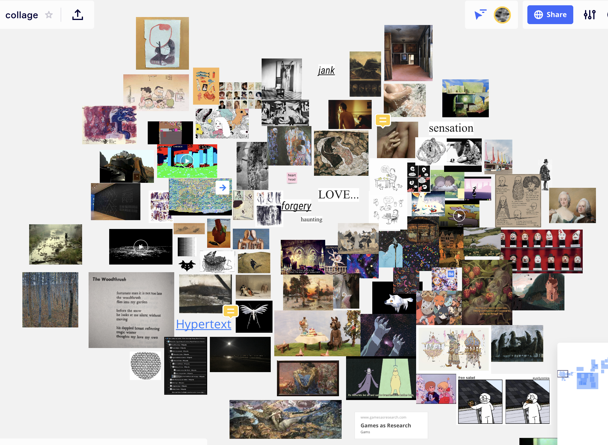
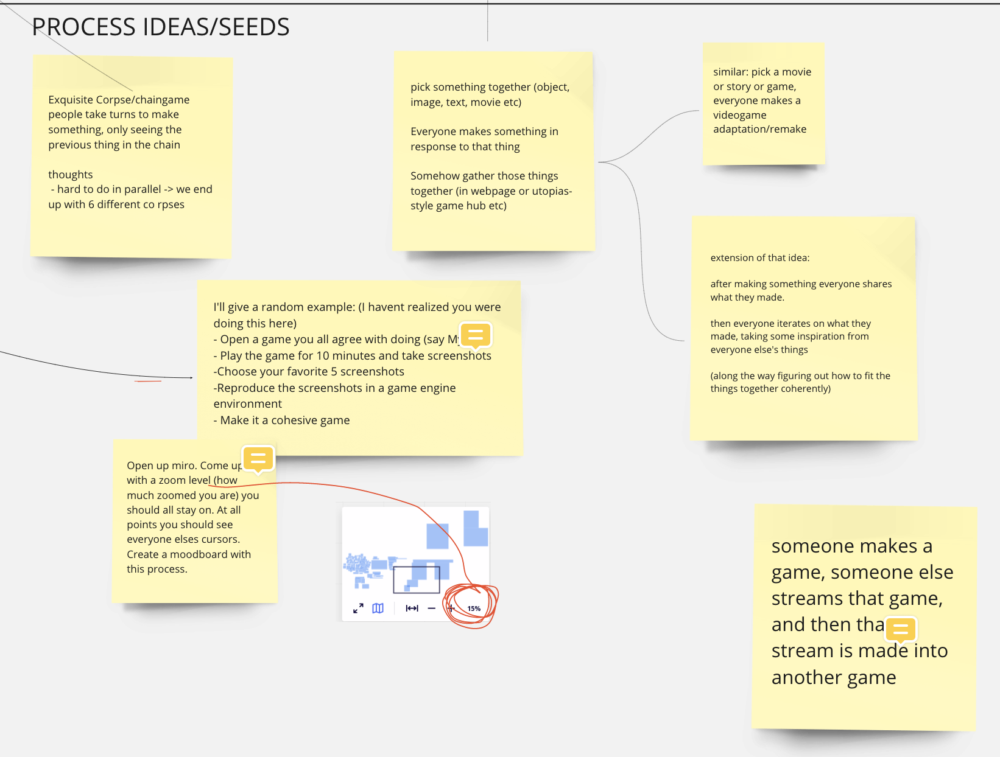

hi i'm darwin welcome to my blog where i will be talking about my experience with our collective collage poem game which is currently a work in progress. i hope that this will be a documentation of our semester-long process and also a helpful tool for personal and collective reflection later on.
thursday mar 4 again
oh yeah, i was also thinking about 'dead links', wonder if that could fit into a narrative somehow, like being unable to revisit somewhere that you went yesterday because the link is broken. i'm guessing this is probably a cliche of internet-era sci-fi (like cory doctorow or something) though i don't remember ever having encountered it. mostly throwing this out there in case anyone reads this and gets inspired by that idea and wants to take it somewhere.
relatedly i've had a vague nagging feeling that we are maybe leaning too much into like 90s web nostalgia, at least for my taste. i don't mind at all but idk i just wonder if there is anything more contemporary that we can deal with somehow. i am v interested in the recent wave of attention towards 'decentralized networks' (ty posted that link a while back), i don't think i understand the social or technical aspects of that well enough to have anything to say there though. actually it seems like both the topology of myst (as in the movement mechanics, not the linking books) and the 90s vision of cyberspace align more closely with a 'decentralized' idea of the web than with the modern top-down data-siloed situation. and 'decentralization' is pretty relevant to our process too! maybe centralization (corporate/state control?) is a theme we should think about?
oh fuck, actually this is kinda what d was talking about yesterday. "a game which is trying to make some sort of argument or reference to the process of its own creation ... Myst seems to take a utopian hope for the possibilities of hyperlinks-- the ability to literally travel between worlds-- & trouble it." i had never thought about this before (thankyou d) but it's true. i never paid much attention to the story in Myst (i should play it again) but it after reading the summary on wikipedia, it sounds like it kinda works as a parable about the perils of a centralized web – Sirrus & Achenar are fighting for top-down control over the network of Ages; they can arbitrarily destroy content (burn books), and they can cut off Atrus from the network entirely. what if the Ages had been hosted in distributed content-addressed storage...? if only the D'ni had had blockchain....
thursday mar 4
i guess i didn't write any blog since a few weeks ago now. i am excited about the direction this project is going but i haven't been working on it much, since we never had clear deadlines it's been too easy to push this to the side when other courses (and life in general) are demanding, still it does feel like we've made some real headway just from talking so much together, lots of cool ideas coming up. hit me hard when bennett said we're a third of the way through the semester already, that happened quick. my feeling is now might be a good time to start doing a little less planning/experimentation and focus on making something using the ideas/process we've kinda vaguely settled on. i'm not sure how others feel about this though.
we've been talking about 'narrative' a bunch, i've been sitting back a bit in these discussions, i don't think i've ever had strong feelings about narrative, i'm not even sure i know what the word means really. but i am happy about this direction, hopefully having some kind of shared narrative will be a way of kind of constraining/uniting the stuff we work on. i do want to try writing some (bad) fiction or whatever to contribute. i'm kind of into the overgrown server room / grimy cybercafe / 90s vr stuff that's been floating around but idk how to avoid falling into cyberpunk genre pastiche that was already pretty played out before the word was glowing yellow on the side of every second bus stop in the city..
come to think of it i actually think the problem of genre is basically equivalent to The Problem, ie 'how to collaborate without everyone getting drowned out' or whatever. meaning - saying '80s zombie action comedy' is a great shorthand way of communicating a complex set of aesthetic values to a group of people with limited shared context, and if everyone is into 80s zombie action comedy then that's great, we're all on the same page and we can probably make something together - but probably not something that will ever really go beyond the territory that we've delimited for ourselves from the get-go - ie not something really new. but with limited bandwidth and limited shared context it's just so hard to get across anything more intricate. i think this is part of if not the reason why anything made by more than a couple of people is very rarely exciting in the same way as solo work (or at least stuff where one person is largely 'in control').
ranting a little here but it's the same thing with all kinds of culture like eg a movie can never be just a movie but has to be situated as eg a horror movie, and largely only 'means' anything through its relationship with the conventions of that genre. or like 4/5 bandcamp bios ('dad rock meets sludge metal with a hint of electroclash'). & netflix/spotify microgenres. don't know if it's fair to say this is driven only by 'marketing', i guess it's just a natural way of compressing information and maybe i shouldn't be so cynical but i can't help it. maybe it's just that it conflicts with some naive romantic image of the work as itself / as an expression of an internal artistic impulse. the audience... the market... culture... economics... i don't really know what i'm trying to say.
the postmodern thing of 'experimenting with'/'playing with'/'subverting' genre (John Zorn, Calvino, idk, probably more representative people that i can't think of) has never really been satisfying either - i just want to get as far away from genre as possible / not have to remember that it exists. i don't know why i've always had this weirdly intense aversion, i'm probably recapitulating some naive outmoded 00s hipster stereotype that i'm not even aware of. i hope one day i will be set free. ok - sorry for this diversion & thanks for reading.
anyway.. the other thing that's been talked out about is some kind of metanarrative whatever that incorporates the process of making the game / our real-world selves / fictionalized versions of ourselves. for some reason i don't feel super inspired by this but if that's the direction we are going in i will do my best to play along. nothing against it, i just feel neutral. i guess i just don't know how to avoid it being some kind of cheesy look-how-postmodern thing. and i don't know how e.g. my mundane blog posts can really mesh with like, the forest, etc. idk, i am interested to see how it will play out though. i was tempted by the idea of adding some fiction into these blog posts but i think i'm finding these too valuable as an honest communication channel. still, if you are reading this from the FOREST, then hi and i hope you enjoy your time here.
things i'm hoping to work on soon:
- write some kind of story or something
- add to the forest
- try rendering some forest scenes in blender
- take some photos or videos
- write about links
- (inspired i guess by d's gui mess, i'm wondering if it would be worthwhile to think about what hyperlinks 'do', especially in the visual myst-esque context. interested in like, what kind of mental effect is created when you click on something in one image and it takes you to another image. in myst i think it's mostly a fairly clear moving-through-space thing, but curious about what else is possible. maybe analogous with 'continuity editing' vs montage in film. i also had in mind for like several years now to write something about flickgame, if nothing else a simple typology of what link-clicking means in different flickgames (moving, pressing, taking, waiting, zooming in etc), so it's an excuse to finally get around to that too.)
- espen aarseth (cybertext) kind of touches on this but not as closely as i had hoped. same with lev manovich (language of new media). i should read janet murray like d suggested. maybe eisenstein or vertov too though from brief inspection that stuff seems harder to get through.
thursday feb 11
hmm i feel like i should do some haunting but i don't feel too inspired. the drag-and-drop html stuff made me think of iGoogle, i remember using that as a kid when it first came out, there was some joy in picking out and arranging these stupid little widgets. most striking thing is the lack of any visual unity between the little boxes, maybe relevant to our own concerns. we've been talking about having 'interactions' between games and it's fun to think about ways these widgets could affect each other. i'm imagining each window might have some awareness of the other widgets, maybe responding to the positioning of them on the screen too. putting frames close together causes bleed. maybe when a drop lands in fran's bucket the drop appears as an object in a unity game nearby. all kinds of things are possible but whether something worthwhile can arise from that remains to be seen i guess. hope to make some kind of a start on this tomorrow morning in studio class.

sunday feb 7
hmm, after we met on friday i felt pretty inspired and i was hoping to smash out some stuff in unity but i ended up just watching leaf mulch videos on youtube for a couple hours. i had some kinda complicated ideas but somehow it's sunday night already and i've done barely anything still so in the interest of being a good hauntable collaborator i will try to finish something simple in the next hour or so. current wip:
saturday feb 6
wednesday feb 3
Jen suggested we have some way of documenting our thoughts so for now we have this github pages site which we can all edit. we could also use this a space for prototyping web games/pages. i like this idea, i will try to keep personal notes on the process to look back on later, and as a record of whatever different ideas we tried etc. this is my very first blog post so i will recap what happened over the last few days.
last Friday in class there was a cluster of ideas around 'collaborative work that preserves individual voice', with the game utopias being a point of reference.


my personal stake in this idea comes from a frustration with the usual structure of game jams, group projects, etc, which seem to often go one of two ways:
- one or a few people end up having outsize influence on the theme/aesthetics/design/etc, which is miserable for everyone else
- people try to be diplomatic and democratic and 'incorporate everybody's ideas', which often results in something incoherent and unbalanced, or else just bland - a kind of 'averaging out' of everyone's individual preferences
this probably stems at least in part from my own characteristics that others don't necessarily share:
- my own preference for 'auteur' work (increpare, thecatamites, everest pipkin, etc etc (and ofc almost all painting, poetry, art film etc)) that imo usually turn out orders of magnitude more interesting than anything made by more than 2-3 people.
- my own incompetence in communicating my tastes & preferences to other people and navigating the micropolitics that usually quickly arises in these situations
so i was happy to see that other people were interested in doing something like this too.
in our first discord meeting yesterday we discussed a whole bunch of different ideas, one of the main themes was an interest in creating something together in which each person's individual taste is preserved, but still feels like a coherent whole. i liked utopias but Ty & others pointed out that the individual games mostly feel pretty unrelated which is a fair criticism. i don't really know if these things ('individual voice' and 'aesthetic unity') are fundamentally opposed (and the best we can hope for is a good middle-ground), or if there might be a way to have both.
we talked about all different kinds of things that we were interested in, trying to find common ground, also discussing different ideas for collaborative processes that we could use. i felt like the tension i mentioned above (multiplicity vs unity) became embodied as a tension in the group between people's different preferences towards one side or the other (i was heavy on the multiplicity side i think). in a way it felt like we were already experiencing all the awkward politics of 'collaborative art making', in trying to decide on a shared process - as though we'd just kicked the problem up from the level of form to the level of process, which i guess was inevitable. i find this stuff sometimes wears me out pretty quickly, and i was losing focus/motivation towards the end of the meeting (which was long). it didn't help that i was already feeling worn out that day mostly due to not having slept enough. on reflection i felt bad about maybe seeming uninterested / not contributing much to discussion, i hope i didn't bring the mood down. i thought i should try to think a bit more about my impact on other people's mood in future discussions. i thought about posting in discord to reaffirm my interest in the project ("sorry i was in a bad mood yesterday, i'm actually really excited for this") but it felt like too much.
still i think the discussion was pretty productive, especially the moodboard-type thing we made where we all added some images in an effort to sketch out some kind of 'vibe' for a project. i don't think we really created anything cohesive but it was a nice way to get an idea of different people's visual interests and get inspired etc. maybe a useful touchstone as we keep working.
we also wrote up a rough 'challenge' and a list of group values.

i was happy to see that someone added "take breaks, short meetings" later on. i was sad though when i saw that george was leaving, especially because his corner of the moodboard resonated most with me. i was wondering if i or we could have done something to show more openness to collaboration / not make anyone feel less valued, but i don't know.
in the meeting today after class i felt like the mood was brighter and i was motivated again, i felt a lucky warmth to be working with creative & interesting & kind people. we spent the time talking some more about different processes we could follow and figuring out how to map the class requirements of 'seeds' and 'prototypes' onto our project. we talked about some other collaboration-games like 'exquisite corpse' drawing, john zorn's Cobra, 'chain games', improv comedy. one thing that came up is the possibility of 'working collaboratively' even in these constrained settings – eg in exquisite corpse, thinking about how your drawing will be perceived by the next person: maybe deliberately aiming to produce some kind of cohesion in the final image. we felt like it would be worthwhile exploring a few different processes, which could be our 'seeds'. after trying different ways of creating and combining work ('prototyping'), we hope to settle on a process to use over the semester. we wrote up some of these different ideas on the miro board:
i like all of these ideas and i'm interested to try some of them out over the next week or two.